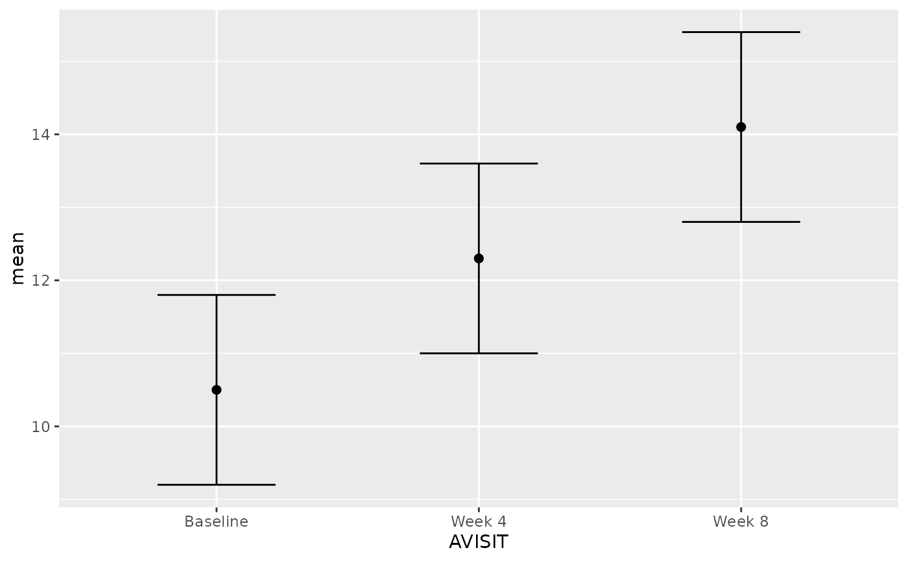
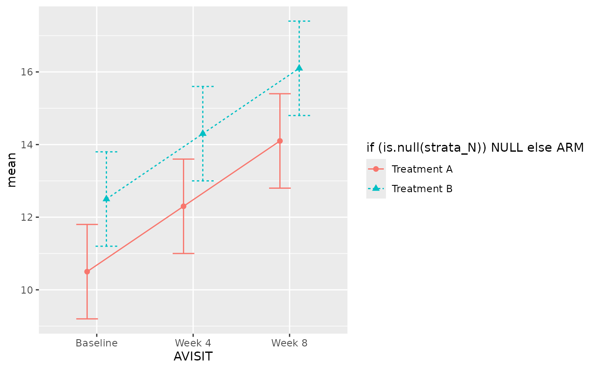

Creates a ggplot line plot of mean (or other mid-point) and
confidence intervals from a summary data frame.
g_lineplot(
df_stats,
x = "AVISIT",
mid = "mean",
strata_N = NULL,
whiskers = c("mean_ci_lwr", "mean_ci_upr"),
mid_type = "pl",
mid_point_size = 2,
position = position_dodge(width = 0.4),
errorbar_width = 0.45,
col = NULL,
linetype = NULL
)(data.frame)
containing pre-calculated statistics (e.g., mean, CIs, N).
(string)
Column name for the x-axis (must be in df_stats).
(string)
Column name for the y-axis middle point (e.g., "mean").
(string)
Column name for the stratification variable used for grouping/coloring (can be NULL).
(character)
A vector of two column names for the lower and upper error bar limits.
(string)
String indicating whether to plot points ("p"), lines ("l"), or both ("pl").
(numeric)
Numeric value for the size of points.
(position)
Position adjustment for dodging points and lines (default: position_dodge(width = 0.4)).
(numeric)
Width of error bars (default: 0.45).
(character)
Vector of color values for manual color scaling.
(character)
Vector of line type values for manual line type scaling.
A ggplot object.
library(ggplot2)
# Create example statistics data frame
df_stats <- data.frame(
AVISIT = factor(c("Baseline", "Week 4", "Week 8")),
ARM = c("Treatment", "Treatment", "Treatment"),
mean = c(10.5, 12.3, 14.1),
mean_ci_lwr = c(9.2, 11.0, 12.8),
mean_ci_upr = c(11.8, 13.6, 15.4)
)
# Basic line plot without stratification
g_lineplot(
df_stats = df_stats,
x = "AVISIT",
mid = "mean",
whiskers = c("mean_ci_lwr", "mean_ci_upr")
)

# Line plot with stratification
df_stats_strat <- rbind(
transform(df_stats, ARM = "Treatment A"),
transform(df_stats,
ARM = "Treatment B", mean = mean + 2,
mean_ci_lwr = mean_ci_lwr + 2, mean_ci_upr = mean_ci_upr + 2
)
)
g_lineplot(
df_stats = df_stats_strat,
x = "AVISIT",
mid = "mean",
strata_N = "ARM",
whiskers = c("mean_ci_lwr", "mean_ci_upr")
)
